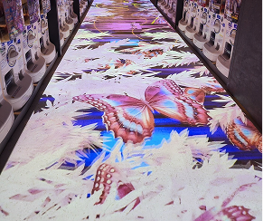
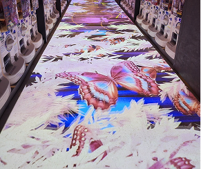

システム開発
現場のニーズに即した、柔軟かつ実用的なシステム設計を提供します。
映像コントロール、物体感知、各種センサーの連動など、目的や運用環境に合わせて、ハードウェアからソフトウェアまでトータルに設計・開発いたします。
既存ハードを活かしながら、UIや制御ロジックを独自に構築することで、コストを抑えながらも高い機能性と拡張性を実現。
汎用製品では対応しきれない現場課題に対して、効率的かつ最適なソリューションをご提案します。
Section1. サービス概要
課題に合わせて、最適な技術構成を。
映像コントロール、物体感知、各種センサーの連動など、使用目的・導入環境に応じたシステム開発を行います。
ハードとソフトを一体で捉え、現場に最適化された設計をご提案。
Section2. 特長・強み
- 既存ハードウェアの活用
汎用品や手持ちの機器を活かして開発可 - UI/ソフトウェアの独自開発
使いやすく現場に馴染むインターフェースを実装 - 短納期・小規模対応OK
PoCや局所導入にも柔軟に対応
既存ハードウェアの活用
立体映像 × LEDコントロール
店舗壁面のLEDディスプレイに、恐竜が飛び出すように見えるアナモルフィック映像を展開。
映像の見え方や視覚的な効果にこだわりながら、再生制御まで含めたシステム全体を開発しました。
私たちは、必要以上に高額な映像制作に頼るのではなく、既存のアセットや技術を工夫して活用することで、
無理なく、そして継続的に映像を発信し続けられる仕組みを大切にしています。
“高い映像”ではなく、伝えたいことがしっかり届く映像を丁寧につくる——それが私たちの考え方です。
 


AIカメラ×プロジェクション×体験型演出
人物の動きをAIカメラでリアルタイムに検知し、光や映像を動的にコントロール。
空間全体と連動した演出により、体験そのものがインタラクティブなコンテンツとして展開されています。
私たちは、既存のカメラ機器でも十分に実現できるAI制御の可能性に注目し、 コストを抑えながらも、没入感のある映像体験を届けることを大切にしています。
特別な機材に頼らず、技術と工夫で本質的な価値をつくる——そんなスタイルで開発を行っています。
カプセルトイPOSセンサー × AI × 基幹システム連携
従来は、カプセルトイを補充するたびに人が数えて商品を登録する手作業が必要でした。
私たちはその仕組みを見直し、センサーと連動して自動で販売情報を記録・集計するPOSシステムを開発。
数える必要のない、まったく新しいガチャ運営が実現しました。
さらに、AIが売れ行きや在庫状況に応じて最適な商品を提案。
「何を入れればいいか」がすぐにわかるため、経験のないスタッフでもすぐに補充業務が行えるようになっています。
バックヤードの在庫も、アプリでどこにあるか一瞬で検索可能。
人の勘や記憶に頼らず、だれでもスムーズに動ける、新しい運営のかたちをサポートしています。